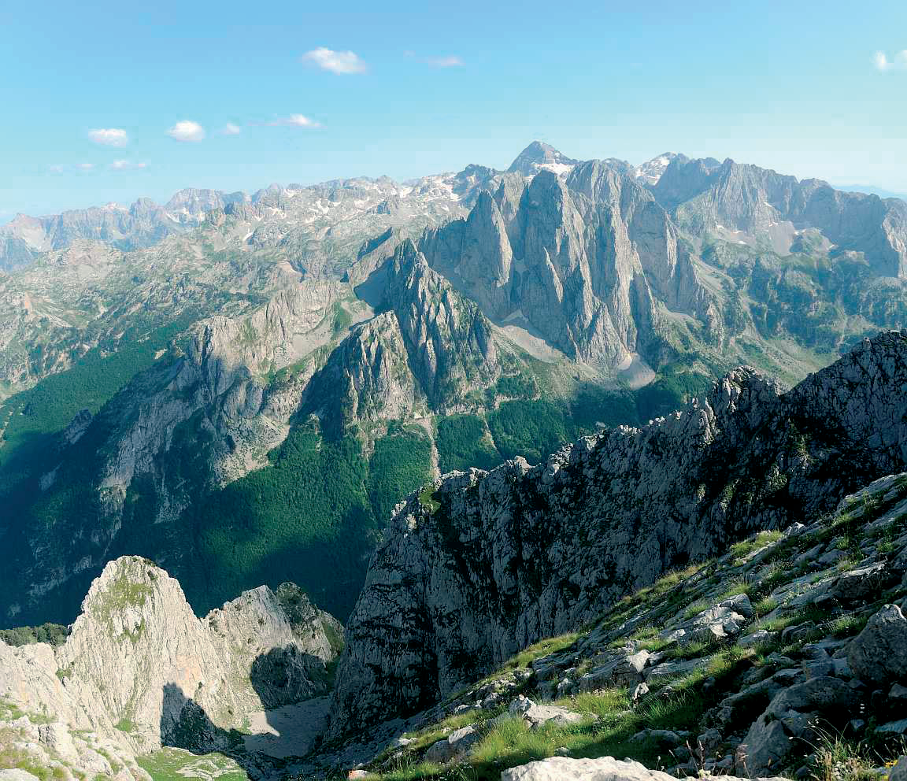

Traditat dhe trashëgimia jonë
Veshjet tradicionale
Situata 1.
Klea me prindërit kishin vendosur të kalonin një fundjavë në Bjeshkët e Nemuna, në Bogë. Ai vend aq i bukur me natyrë mbresëlënëse, Kleas i ofronte qetësi e kënaqësi. Ndërkohë që po ktheheshin nga pushimi i shkurtër, Klea po u thoshte prindërve që këto male ishin shumë të bukura.
Nëna e Kleas, që çmonte shumë traditën e popullit tonë, shtoi se ky vend, përveçqë kishte reliev të mrekullueshëm, kishte dhe shumë veçori të tjera që e bënin kaq të bukur.
Nëna filloi të tregonte për veshjen tradicionale të Rugovës dhe, ndërkohë që po fliste për ngjyrat e kësaj veshjeje, punën e dorës e të tjera, Klea mrekullohej dhe vendosi që të kërkonte në internet këto veshje e të bënte një prezantim për to para klasës. Ajo donte që të nxiste dhe shokët e shoqet e klasës që të njihnin veshjet tradicionale të trevave të Kosovës, sepse pothuajse çdo vend ka veshjen e vet karakteristike.
